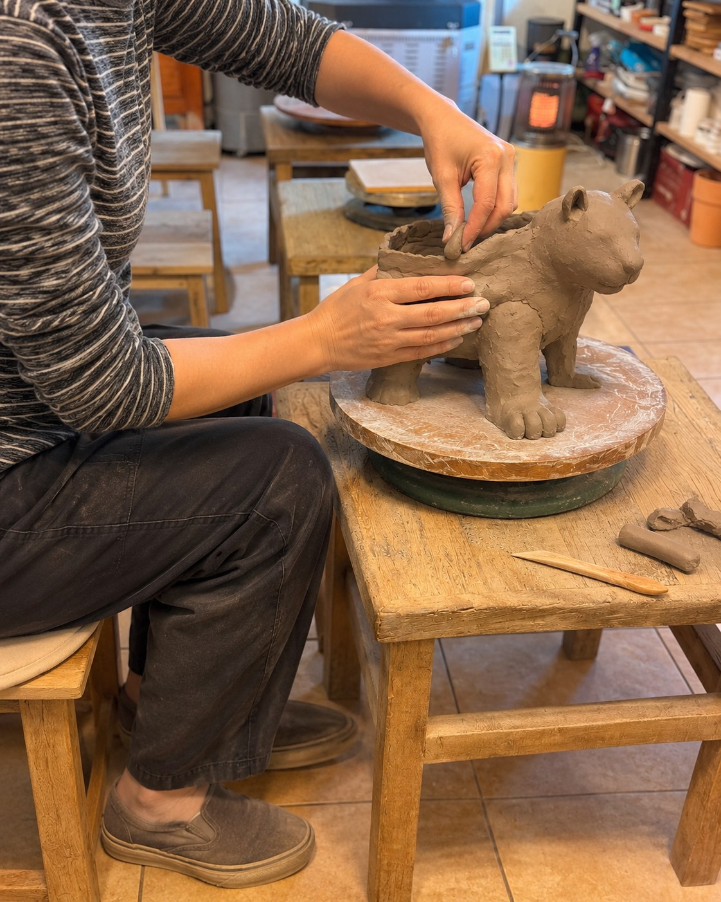
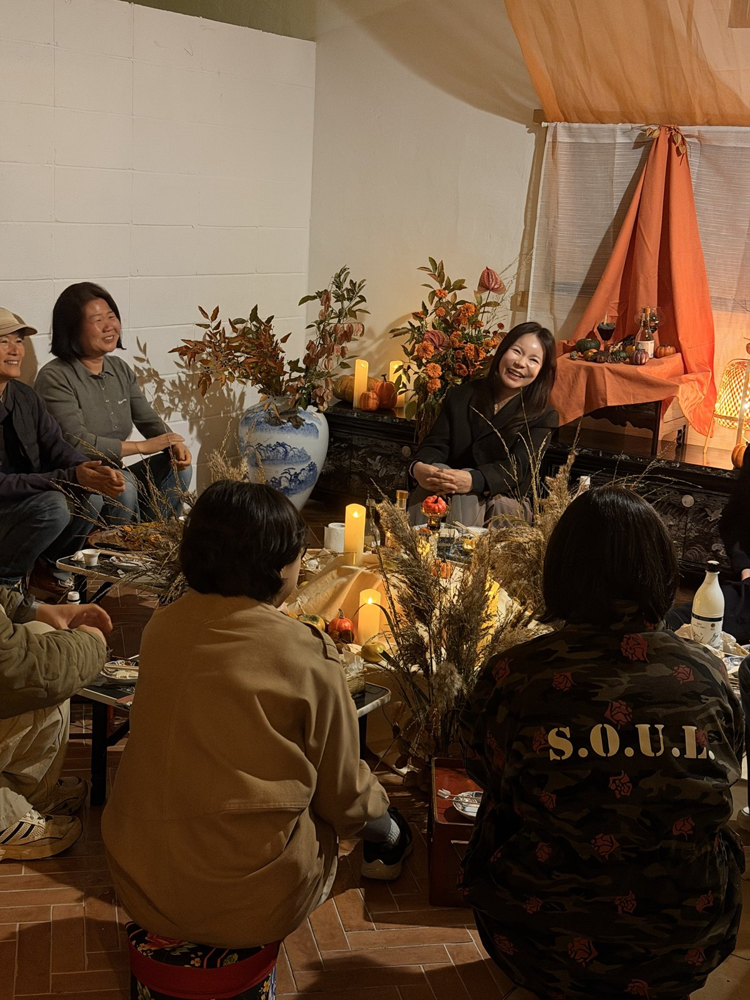

대지를 깨우는 호랑이
조각가 최희원이 입춘에서 떠올린 호랑이

넘겨 보기 →
조각가 최희원 · 1080×1350 (4:5) 인스타그램 규격
조각가 최희원이 입춘에서 떠올린 호랑이

Q작가님과 지금 진행 중인 작업을 소개해 주세요.
십이지의 동물을 통해 계절의 변화와 생명의 움직임을 조각으로 표현하는 최희원입니다.
지금은 2월, 입춘에서 떠올린 호랑이를 만들고 있습니다.

쥐 작업
그 특징을 계절 속에서 발견하는
여러 가지 힘과 연결하고 있어요.

Q작가님이 표현하는 호랑이는 어떤 존재인가요?
호랑이라고 하면 보통 날카로운 이빨이나
위엄 있는 모습, 강한 힘을 떠올리죠.
저는 그 힘이 무엇을 향하는지에 관심이 있었어요.

입춘 立春
얼어붙은 땅 아래에서 생명이 다시
움직일 준비를 하는 모습을 떠올렸어요.
그 움직임을 처음 일으키는 힘에
호랑이의 몸을 부여하고 싶었습니다.

Q그 힘을 조각에서는 어떻게 표현하고 싶으신가요?
몸의 무게가 발을 통해 대지로 전해지고,
그 울림이 땅속에 잠들어 있던 생명들에게
닿는 모습을 상상합니다.
하나의 동작 안에 겨울의 고요함과
봄이 시작되는 순간을 함께 담고 싶습니다.

Q이런 해석은 작가님의 경험과도 연결되나요?
누군가를 만나고 나면 한동안 멈춰 있던 마음이
움직이고, 미뤄 두었던 일을 다시 시작하게 되잖아요.
저에게도 그런 만남들이 있었어요.
이 작품을 보는 분들도 자신을 다시 움직이게 했던
사람이나 순간을 떠올릴 수 있으면 좋겠습니다.
댓글로 들려주세요
각 카드의 PNG 파일(1080×1350)은 저장소의 cardnews-tiger/png/ 폴더에 있습니다.